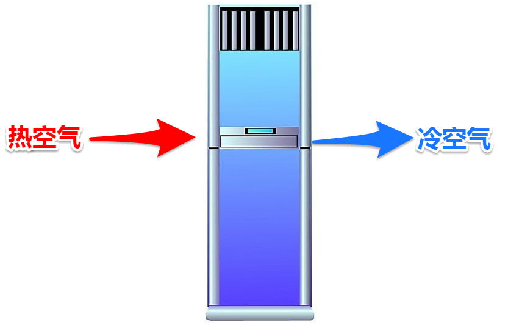
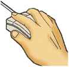
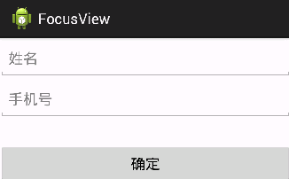
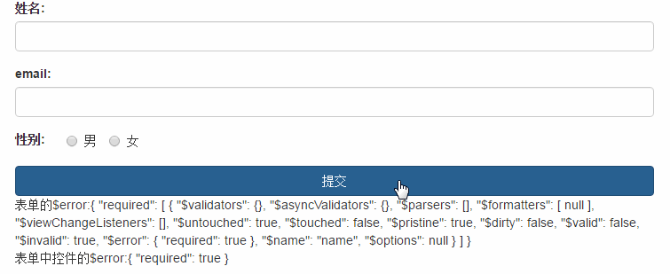
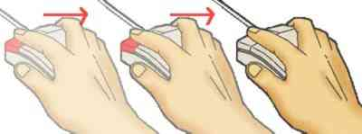

什么是函数？
编程的角度： 具有某种功能的代码判断。
生活的角度： 函数就是一个完成特定功能的工具
一般情况下，函数都具备参数和返回值



函数如何创建？
常见的函数有哪些？？
Math.pow(a, 5);
alert("ok");
document.write("你好")
函数的定义方式：
function test(){
}
函数的好处有哪些？
1) 代码复用
2) 封装（隐藏细节）
3) 控制代码的执行时机
1 声明式
function test(){
//声明会被提前，可以在任何地方调用
}
2 赋值式
var test = function(){
//只能在该函数以下位置，调用
}
两种创建方式的区别？？
JS是一个脚本语言，那么它的代码，需要编译吗？ 需要
在编译的过程中，所有的声明语句，都会被提前。
b(); //当执行函数b的时候，由于声明被提前，可以执行
a(); //当执行函数a的时候，由于a仍未定义，不可执行
function b(){
document.write("aa");
}
var a=function(){
document.write("123");
}
如何执行函数？
函数与事件的结合？
onclick 单击
ondblclick 双击

onfocus 获得焦点

onblur 失去焦点

onmouseover 鼠标划入
onmouseout 鼠标划出

onmousemove 鼠标移动

onload 页面加载完成
onkeydown 键盘被按下
onkeyup 键盘被松开
onkeypress 键盘按下并松开
onsubmit 表单提交事件
onmouseenter 鼠标划入（区别于onmouseover）
onmouseleave 鼠标划出（区别于onmouseout）
什么是匿名函数？？
function(){
//由于没名字，该函数无法调用
}
匿名函数如何运行？？
(function(){
//函数在定义的同时，立即执行。 也叫作函数的自运行。
})();
函数的参数及返回值是什么？
参数不做类型检查
作用域
var a = 99;
function test(){
var a = 10;
alert(a); //10
}
test();
作用域链
var a = 100;
function m1(){
var a = 200;
function m2(){
console.log(a);
}
m2();
console.log(a);
}
m1();
console.log(a);
为什么会有栈和堆？？
索引思维：


栈相当于堆的索引

栈和堆


什么是变量声明提升？？
var n = 2;
(function(){
console.log(n); //undefined 2
var n = 10;
console.log(n); //10
})()
//以上写法 等价于 以下写法：
var n = 2;
(function(){
var n; //变量的声明不管写在哪里，都会被提升到该作用域的最前面
console.log(n); //这里应该是undefined
n = 10; //这里只是一个赋值动作
console.log(n); //毫无疑问等于10
})()
变量和函数重名的问题？？
var a = 10;
function a(){}
alert(typeof a);
//以上写法 等价于 以下写法：
var a;
function a(){}
a = 10;
因此a最终被10覆盖，则为number类型
arguments是什么？ 该对象包含了函数执行时，传入的所有参数
function add(){
//console.log(arguments instanceof Array); //确认是不是数组类型
//console.log(arguments);
var sum = 0;
for(var i=0; i<arguments.length; i++){
sum += arguments[i];
}
return sum;
}
console.log( add(10,222,32,46,5,6, 11,10,35) );
//arguments本身不是数组，而是经过封装的一个对象，它包含一个数组，即我们的参数列表
//由于它可以当成数组来使用for循环遍历，因此，我们管这类对象，叫做伪数组
arguments.callee是什么？
代表了函数本身
(function(num){
if(num == 0) return 1;
return num * arguments.callee(num-1);
})(5);
问题解析： (有名字的匿名函数)
var a = function b(){
b = 3;
console.log(b);
}
a();
//function b 看做一个有名字的 匿名函数
//一个有名字的匿名函数，其函数名 是只读的，不可更改
//同时，该函数名只能在函数内部使用，相当于局部变量
//b(); 报错，无法调用，找不到b函数
JSON字面量对象和new 对象 的使用方式有什么区别？
//使用new关键字创建对象
var cat = new Object();
//使用json形式创建对象
var cat = {
color : "black",
age : 3,
weight : "8kg"
}
打印一个对象不存在的属性？
var obj = {
attr1 : "10",
attr2 : 20,
attr3 : 30
}
console.log(obj.attr4);
如何判断对象是否存在某个属性？？
if(obj.attr){
//对于attr等于0或null， 条件不成立
}
if("attr" in obj){
//判断attr是否存在于对象obj当中
}
问题解析：
if (!("a" in window)) {
var a = 1;
}
alert(a);
var a = 1,
b = function a(x) {
x && a(--x);
};
alert(a);
function a(x) {
return x * 2;
}
var a;
alert(a);
function b(x, y, a) {
arguments[2] = 10;
alert(a);
}
b(1, 2, 3);
闭包
function m1(){
var x = 1;
return function(){
console.log(++x);
}
}
m1()(); //2
m1()(); //2
m1()(); //2
var m2 = m1();
m2(); //2
m2(); //3
m2(); //4
GC 垃圾回收机制： 自动回收
关于值传递 (函数内部的更改不影响外部)
var num = 50;
function add(num){
num=100;
}
add(num);
console.log(num);
引用(指针 | 快捷方式)传递 （函数内部的更改会影响外部）
var arr = [10,20,30];
function add2(arr){
arr[0]=99;
}
add2(arr);
console.log(arr);
数据结构： 队列和链表
函数递归 : 当一个函数调用了函数自身，就会形成递归
1 阶乘 100!
100! = 100 * 99 * 98 * 97 * 96 ......
100! = 100 * 99!
99! = 99 * 98!
98! = 98 * 97!
n! = n * (n-1)!
f(x) = x * f(x-1)
function f(x) {
return x * f(x-1);
}
2 求和 1+2+3+4+5.........+n
function sum(n){
if(n == 1) return 1;
return n + sum(n-1);
}
3 最大公约数

function divisor(x,y){ //辗转相除法
var r = x%y;
x = y;
y = r;
if(r==0) {
return x;
} else {
return divisor(x,y);
}
}

function divisor(x,y){ //更相减损法
if(x%2==0 && y%2==0){
return 2*divisor(x/2,y/2);
} else {
var max = Math.max(x,y);
var min = Math.min(x,y);
var cha = max - min;
if(cha == min) {
return min;
} else {
return divisor(cha, min);
}
}
}
4 斐波那契数列
//1 1 2 3 5 8 13 21 34 55 89 .........
//f(x) = f(x-1) + f(x-2);
function f(x) {
if(x <= 2) {
return 1;
}
return f(x-1) + f(x-2);
}